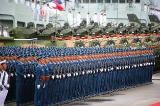

Harmágedon
Door: Franklin ter Horst. (Aangemaakt 22 juli 2005) (laatste
bewerking: 15 augustus 2019)
Openbaring 16:12-13-14-16 En de zesde engel goot
zijn schaal uit op de grote rivier, de Eufraat, en zijn water droogde op, zodat
de weg bereid werd voor de koningen, die van de opgang van de zon komen.En ik
zag uit de bek van de draak en uit de bek van het beest en uit de mond van de
valse profeet drie onreine geesten komen, als kikvorsen; want het zijn geesten
van duivelen, die tekenen doen, welke uitgaan naar de koningen der gehele
wereld, om hen te verzamelen tot de oorlog op de grote dag van de almachtige
God….En hij verzamelde hen op de plaats, die in het Hebreeuws genoemd wordt
Harmágedon.
Veel mensen voelen dat er iets staat te gebeuren, dat de wereld afstevent op een horrorscenario. Hoe dichter wij bij de terugkomst van de Here Jezus zijn, des te nadrukkelijker zullen de gebeurtenissen zich ontwikkelen in de richting van de profetieën. Over de huidige wereldgebeurtenissen ligt duidelijk de schaduw van de naderende eindcrisis voor alle volkeren. De wereld nadert in snel tempo de tijd van de vervulling van de laatste grote Bijbelse profetieën en de geschiedenis van de mensheid. Bijbelgetrouwe gelovigen weten wat dat betekend, dat de hele schepping in afwachting is van het onvermijdelijke dat komen gaat, maar ook dat er een nieuwe tijd zal aanbreken, een duizendjarig paradijsachtig vrederijk, met de Here Jezus als Koning op de troon. Alleen Jezus zal in staat zijn Gods plan met onze wereld ten uitvoer te brengen. De komst van de Here Jezus zal definitief een punt zetten achter alle oorlogsplannen van de wereldse machten.
Het boek Openbaring meldt ,,dat God de wereldmachten zal verzamelen op een plaats die in het Hebreeuws genoemd wordt Harmágedon.” Harmágedon is in de Bijbel het klassieke slagveld van de laatste grote oorlog en doet velen denken aan eindtijdrampen en alles verwoestende catastrofes die de aarde zullen teisteren. Het is het toneel van de uiteindelijke strijd tussen de ‘machten van goed en kwaad’. De in Openbaring genoemde koningen worden aangezet door boosaardige geestelijke machten. Allen die zich tegen God hebben gekeerd komen om in deze eindslag.Dit is echter niet een normale oorlog, het is een geestelijk slag, waar geen vijand tegen bestand is.Ezechiël zegt dat er zeven maanden nodig zullen zijn om de lijken van de verslagenen te begraven en zeven jaar lang zal men nodig hebben om al het wapentuig op te ruimen en te vernietigen.Alle vijanden van God worden overwonnen, te beginnen met de koningen,de machthebbers, legeroversten, kotom, alle vijanden van hoof tot laag.
Harmágedon betekent echter niet het einde van de wereld, maar slechts het einde van onze huidige wereldcyclus, een episode waarin de wereld zich in chaos zal storten en ten onder zal gaan. In de Apocalyps wordt de naam Harmágedon gegeven aan de plaats waar drie onreine geesten de koningen van de wereld zullen verzamelen voor de strijd tegen God. De algemene gedachte is dat de apocalyptische oorlog van de eindtijd zal plaatsvinden in de omgeving van het Bijbelse Megiddo.
Historici zeggen dat er geen plaats in de wereld is waar zoveel historische veldslagen hebben plaatsgevonden als om en rond Megiddo. Het Bijbelse Meggido is strategisch gelegen op een knooppunt van de Via Maris, de oude verbinding van de kust met de in het centrum en noorden van het land gelegen steden. Megiddo was een van de ommuurde stadstaten die door Jozua werden veroverd. Opgravingen in Tel Megiddo die rond 1925 werden uitgevoerd brachten een twintigtal boven elkaar gelegen vestingen aan het licht, waarvan de oudste uit ca 4000 v. Chr. Tot de vondsten binnen de muren behoren ook resten van een Kanaänitische tempel, paleizen, opslagplaatsen, uitkijktorens, garnizoenen en een paardenstal. Onder koning Salomo kwam de stad opnieuw tot bloei. De plaats was vooral ook bekend vanwege het feit dat de richter Barak met Gods hulp het sterke leger van Sisera versloeg bij de wateren van Megiddo.
In het Bijbelboek Openbaring is sprake van een enorme legermacht die zal komen opzetten vanuit het Oosten, van de opgang van de Zon, en dat deze zich zal aangorden tot een vernietigende strijd. Een strijd zoals zich nog nooit heeft voorgedaan in de lange geschiedenis van bloedige oorlogen op de aarde.
Openbaring 16:12 En
de zesde engel goot zijn schaal uit op de grote rivier, de Eufraat, en zijn
water droogde op, zodat de weg bereid werd voor de koningen, die van de opgang
van de zon komen.
De Eufraat vormde met haar
lengte van
Links
de Eufraat zoals het was.
Rechts het waterpeil anno 2012,
Velen geloven dat de tekst in Openbaring 16:12 betrekking heeft op China. China ontwaakt! China zal in de eindfase van het huidige wereldbestel een groot en indrukwekkend volk vormen en opkomen als een formidabele eindtijdmacht. Dat begint inmiddels op velerlei gebied zichtbaar te worden. Er doen zich profetische ontwikkelingen voor in het huidige China. China bouwt haar militaire macht sneller op dan de militaire analisten van de Amerikaanse inlichtingendiensten ooit voor mogelijk hebben gehouden. Afgevaardigden van defensie spreken van een onrustbarende ontwikkeling. De militaire opbouw is gigantisch en omhelst een serie hoogtechnologische wapens waarmee men de VS een vreselijke slag kan toebrengen.
Evenals in de tijd van de opkomst van Nazi-Duitsland, zijn er ook nu wereldleiders die hun ogen sluiten voor de massale bewapening van China. Peter W.Rodman schreef in een publicatie van “The Nixon Center” dat de Verenigde Staten denken de enige overgebleven supermacht op de wereld te zijn. Maar volgens Rodman dienen de Amerikanen op hun tellen te passen want in de afgelopen eeuwen zijn andere supermachten te gronde gegaan door zelfoverschatting of onoplettendheid. ,,Ook Japan heeft men destijds te weinig gewantrouwd” aldus Rodman. De superwapens die ontwikkeld worden voor de volgende Wereldoorlog kregen extra aandacht nadat China in de winter van 2007/2008, één van haar verouderde weersatellieten uitschakelde met een op de grond gestationeerd anti-satelliet-raketsysteem.
In het noordoosten van de Verenigde Staten, in een gebied van ca. 15.000 vierkante kilometer, zaten in 2003 enige tijd 50 miljoen Amerikanen zonder stroom. Volgens Tim Bennett, de voormalige president van de Cyber Security Industry Alliance, hebben vertegenwoordigers van de Amerikaanse inlichtingendienst tegenover hem bevestigd dat het Chinese leger hiervoor verantwoordelijk was. De officiële verklaring van de overheid voor de enorme stroomuitval was destijds het in contakt komen van boomtakken met elektriciteitsleidingen in de staat Ohio.Volgens het Amerikaanse ministerie van Defensie ontwikkelt China niet-kinetische methodes om satellieten aan te vallen, zoals het storen en verblinden van satellieten en het gebruik van lasers, microgolfwapens, deeltjesstralen en elektronische pulswapens. Volgens Tim Bennett zijn de Chinezen eveneens verantwoordelijk voor de stroomuitval in Florida in februari 2008. Hierdoor kwamen drie miljoen mensen zonder stroom te zitten.
In november 2010 ontstond het nodige oproer over een onbekende
raketlancering voor de kust van Californië en een dag later boven New York.
Daar werd een object gefilmd dat zeker
Veel onafhankelijke experts zijn het er over eens dat de raketlancering bij Californië afkomstig moet zijn geweest van een Chinese onderzeeër. Naast dit voorval werd de Amerikaanse marine onaangenaam verrast door het plotselinge opduiken van een Chinese Song-klasse onderzeeër, precies tijdens een oefening rond het vliegdekschip USS Kitty Hawk ten zuiden van Japan. Volgens een woordvoerder van de NAVO zijn de Amerikanen behoorlijk geschrokken van het feit dat China klaarblijkelijk al zulke moderne onderzeeërs heeft dat het -zonder op te vallen, vliegdekschepen kan benaderen- en in potentie zo kan vernietigen. Ook haalt China de banden aan met steeds Israël- vijandiger wordende landen waaronder Turkije. Zo waren Chinese Su-27 jagers betrokken bij de militaire oefening Anatolian Eagle. Opmerkelijk was dat deze vliegtuigen bijtankten in Iran. Daarnaast stuurde het Chinese leger commandotroepen naar Turkije om met het Turkse leger gezamenlijke militaire oefeningen te houden.
De laatste
tijd zijn er in toenemende mate spanningen
tussen China en de Verenigde Staten. Zo heeft de Chinese marine een Amerikaans
patrouillevliegtuig weggejaagd uit de Zuid Chinese Zee. Volgens
de internationale richtlijnen is de Zuid Chinese zee uiteraard geen Chinees
eigendom en mag iedereen daar vertoeven. China is een andere mening toegedaan
en heeft zich de hele Zuid Chinese Zee toegeëigend en is daar bezig om allerlei
kunstmatige eilandjes te creëren. De Obama-administratie heeft laten weten zich
niets aan te zullen trekken van de Chinese eigendomsclaims voor dat gebied en
heeft laten weten dat het niet verstandig is om te proberen de Amerikaanse
marine tegen te houden. China heeft daarop geantwoord dat wanneer dit de
houding van Amerika zal zijn, dit onherroepelijk tot een oorlog zal leiden.
Volgens Washington heeft China geen vreedzame bedoelingen met de eilandjes
omdat ze via satellietopnames hebben gezien dat de Chinezen druk bezig zijn met
het installeren
van bewapening op de eilanden, zoals artillerie maar daarvoor blijkt echter
geen enkel bewijs te bestaan. Hua Chunying, de vrouw die namens het Chinese
Ministerie van Buitenlandse Zaken, beweert geen
weet te hebben over wapens en zei verder dat Peking van mening is dat het
soeverein Chinees gebied is waar ze bezig zijn en dat ze daardoor het recht
hebben om dit te beschermen. Ondertussen gaat Amerika verder met het opbouwen
van militaire aanwezigheid in de regio. Admiraal Sun liet doorschemeren dat
China mogelijk een "no fly" zone gaat instellen voor het gebied
indien het land het gevoel krijgt dat ze worden bedreigd. Ondertussen heeft
China een aantal schepen richting
Hawaï gestuurd om de Amerikaanse vloot beter in de gaten te kunnen houden.
China is omringd door tientallen Amerikaanse bases met raketten, bommenwerpers,
oorlogsschepen en vooral kernwapens. Van Australië via de Stille Oceaan naar
Japan, Korea via Eurazië naar Afghanistan en India vormen deze bases de
perfecte strop.
Amerika heeft in 2015 de grootste militaire oefening sinds de Koude Oorlog gehouden in Chinese regio. Onder de naam “Talisman Sabre” oefenden een armada aan schepen en lange afstand bommenwerpers een “Air-Sea battle concept for China”, wat inhoudt dat de Straat van Malakka wordt geblokkeerd, waardoor de aanvoer van gas, olie en andere ruwe grondstoffen naar China vanuit het Midden Oosten en Afrika wordt tegengehouden. Naar aanleiding van al dit machtsvertoon heeft China in de loop van 2016 besloten om de status van de gereedheid van hun kernwapens permanent te verhogen naar “high alert”. De bekende journalist John Pilger, heeft twee jaar gewerkt aan zijn documentaire The Coming War on China.
Maar ook China zit niet stil. Het heeft militaire basis ingericht in de Indische oceaan, de Zuid-Chinese zee, de Straat van Malakka, het centrum van de Grote oceaan en het Caribisch gebied. Ze zijn overal bezig met het bouwen van bruggenhoofden. Dit alles wordt mogelijk gemaakt door een ongekende economische groei. China’s economie is de laatste 10 jaar, jaarlijks met 10 procent gegroeid en is druk bezig de economie van het Westen te ondergraven. Chinese kooplieden zijn in grote aantallen en met een zeer ruim assortiment aan goederen het westen binnengedrongen. In Australië en Nieuw-Zeeland zijn bijna alle meubelen, die in de etalages van grote warenhuizen staan, gefabriceerd in China. Door de goedkope arbeidskrachten kunnen praktisch alle producten voor lage prijzen aan de man worden gebracht, waar ook ter wereld. Steeds meer bedrijven in het westen zijn genoodzaakt hun deuren te sluiten omdat ze niet tegen de gestaag toenemende import opkunnen. Volgens “Business Week” zal China op termijn alle concurrenten achter zich laten. China besteedt 65 miljard dollar per jaar aan “defensie”. Dat is na de Verenigde Staten het grootste budget ter wereld. Henry Kissinger zei in april 2008 dat hij voorziet dat Rood-China een grote macht in het Verre-Oosten zal worden.
Uit een peiling van de staatskrant Global Times is gebleken dat bijna 55% van de Chinezen denkt dat er een nieuwe koude oorlog komt met de Verenigde Staten. Hoge officieren van de Chinese landmacht en marine verwachten zelfs een militaire confrontatie tussen de twee grootmachten. De Chinezen beginnen zich steeds brutaler ten opzichte van Amerika op te stellen.
 Chinees
leger
Peking stookt de mensen op tegen de Verenigde Staten zegt Joseph Perkins in “The Schwarz Report”, waarin hij refereert aan twee in “The Washington Times” gepubliceerde rapporten, afkomstig van het Pentagon en de “U.S.China Security Commission”. Zhu Chenghu, een hoge Chinese militair, verklaarde in een briefing in de Financial Times, dat China het gebruik van nucleaire wapens niet uitsluit wanneer het tot een conflict tussen beide landen mocht komen over de kwestie Taiwan. De uitspraak is veel meer dan een “opinie” van hemzelf. Het Chinese leger wordt getraind voor een oorlog tegen de Verenigde Staten. Er is duidelijk sprake van een koude oorlog tussen de beide landen. China bezit een groot arsenaal atoomwapens en intercontinentale raketten waarmee alle landen in de wereld binnen hun bereik liggen. Ook beschikt het land over andere middelen voor het op grote schaal doden van mensen. China heeft Amerika gewaarschuwd dat het tot een oorlog zou kunnen komen indien de Verenigde Staten mocht besluiten Taiwan te hulp te komen bij een aanval van China. Er is een wet aangenomen die de leiders van het land een legale basis biedt voor een aanval op Taiwan.
Het Chinese leger houdt met regelmaat militaire oefeningen in de straat van Taiwan, een zee-engte tussen China en Taiwan. Washington heeft zichzelf verbonden te helpen om elke vijand die de handen uitstrekt naar Taiwan, te weerstaan met alle mogelijke geweld. Hiervoor bevinden zich naar schatting zo’n 100.000 militairen in de omgeving van Taiwan, het vroegere Formosa.
Volgens een onafhankelijk onderzoek van de Chinees sprekende media willen politieke leiders meer wapens gaan verkopen aan Amerika's vijanden, zoals Iran, en verwachten hoge officieren van het Chinese leger en de marine zelfs een militaire confrontatie tussen de twee grootmachten.
Alles wijst er dan ook op dat China zich voorbereidt op een directe militaire confrontatie met de VS en die te kunnen winnen. Op 9 januari 2014 testten de Chinezen een nieuwe hypersonische raket (WU-14) die de Amerikaanse raketafweer te snel af zou kunnen zijn. De complete Chinese strijdmachten lijken vooral gericht op het bij verrassing kunnen uitschakelen van Amerika. De Amerikaanse defensiegigant General Dynamics voorspelt dan ook dat China op zeker moment een preventieve aanval op de VS zal uitvoeren.
De Chinezen beginnen zich steeds brutaler ten opzichte van Amerika op te stellen. Volgens een niet nader genoemde diplomaat is Barack “King” Hoessein Obama tijdens zijn bezoek aan China in 2009 zelfs ronduit vernederd. Hoewel de Amerikaanse ambassadeur net zoals de media naar buiten toe beweerde dat de onderlinge relaties nog nooit zo goed waren geweest, was er volgens deze diplomaat juist sprake van een ijskoude en onverzoenlijke sfeer. De Chinezen zouden doelbewust moeilijk hebben gedaan over ieder aspect van het protocol, lieten alleen voorgeselecteerde mensen toe bij een openbare bijeenkomst met Obama, censureerden het enige interview dat de president aan een Chinese krant mocht geven en verboden de Amerikanen gebruikt te maken van hun eigen helikopters om Obama naar de Chinese muur te vliegen.
 Diplomaten
spraken van een 'ijzige' persoonlijke sfeer tussen Obama en de Chinese
president Hu Jintao. Er was zelfs geen sprake van de oppervlakkige vriendelijkheid
die eerdere Amerikaanse presidenten wél hadden ervaren bij hun bezoek aan
China. Hu Jintao weigerde verder ook maar een seconde Obama's pleidooi voor een
devaluatie van de Chinese munteenheid te overwegen. De Chinese leider deed
slechts wat vage toezeggingen om samen te werken op het gebied van
klimaatverandering. Maar drie weken later liet hij de Amerikanen tijdens de
klimaatconferentie die in december 2009 onder
auspiciën van het in Geneve zetelende Intergovernmental Panel on Climate Change
(IPCC) van de Verenigde Naties, in Kopenhagen plaatsvond, volkomen in de
kou staan.
Diplomaten
spraken van een 'ijzige' persoonlijke sfeer tussen Obama en de Chinese
president Hu Jintao. Er was zelfs geen sprake van de oppervlakkige vriendelijkheid
die eerdere Amerikaanse presidenten wél hadden ervaren bij hun bezoek aan
China. Hu Jintao weigerde verder ook maar een seconde Obama's pleidooi voor een
devaluatie van de Chinese munteenheid te overwegen. De Chinese leider deed
slechts wat vage toezeggingen om samen te werken op het gebied van
klimaatverandering. Maar drie weken later liet hij de Amerikanen tijdens de
klimaatconferentie die in december 2009 onder
auspiciën van het in Geneve zetelende Intergovernmental Panel on Climate Change
(IPCC) van de Verenigde Naties, in Kopenhagen plaatsvond, volkomen in de
kou staan.
Tijdens deze conferentie had de grote ’verlosser’ Obama de hulp van bodyguards nodig om onaangekondigd een zaal binnen te komen waar de Chinese premier Wen Jiabao achter zijn rug om afspraken aan het maken was met de Indiase premier Singh en president Lula da Silva van Brazilië. Obama zei niet gediend te zijn van dit soort geheime besprekingen. Maar tijdens de speech van Wen Jiabao was hij zelf in een ‘achterkamertje’ met andere landen aan het overleggen. Terwijl officiële woordvoerders tegenover de media volhielden dat de klimaattop wel degelijk een succes was, waren de Amerikanen woedend vanwege de Chinese pogingen om Obama te vernederen. 'Ze dachten dat Obama zwak was en daarom testten ze hem,' merkte een Europese diplomaat in China op.
Waar China zich ook mateloos over opgewonden heeft is dat Obama de door hen verafschuwde Tibetaanse geestelijke leider, de Dalai Lama, op het Witte Huis heeft ontvangen. Amerikaanse officials zijn naar verluid verbijsterd over de felle nationalistische retoriek in de Chinese media en op het internet. In een interne publicatie van de elitaire Qinghua Universiteit wordt de verwachting uitgesproken dat, nu er dermate grote belangen op het spel staan, de spanningen tussen China en de VS alleen maar groter zullen worden. Er zal een felle strijd met Amerika losbarsten over de export, de overdracht van technologie, auteursrechten, piraterij en de waarde van de Chinese munteenheid, de yuan (Renminbi). Slechts weinigen in China proberen de gemoederen nog te bedaren.
Officials in Peking zeggen inderdaad een neerbuigende houding tegenover Obama waar te nemen, en wijzen bijvoorbeeld op de Chinese minister van Buitenlandse Zaken Yang Jiechi, die er openlijk prat op gaat persoonlijke kontakten te hebben met de Bush-dynastie en andere leden van de traditionele blanke Anglo-Saksische elite in Amerika.In het Witte Huis heeft men inmiddels genoeg van de Chinese provocaties, en lijkt het roer om te zijn gegaan. Obama dreigt niet alleen met harde handelsmaatregelen als de Chinezen niet samenwerken met Amerika.
De Chinezen zijn witheet. ,,We moeten terugslaan -oog om oog, tand om tand- en wapens verkopen aan Iran, Noord Korea, Syrië, Cuba en Venezuela”, aldus Liu Menxiong, een lid van de Chinese politieke volksraadplegende conferentie. ,,We hoeven nergens bang voor te zijn. De Noord Koreanen stonden op tegen Amerika en wat gebeurde er met hen? Niets! Iran stond op tegen Amerika en wat deed Obama?” Niets!
Amerikaanse officials zijn naar verluid verbijsterd over de felle nationalistische retoriek in de Chinese media en op het internet. In een interne publicatie van de elitaire Qinghua Universiteit wordt de verwachting uitgesproken dat, nu er dermate grote belangen op het spel staan, de spanningen tussen China en de VS alleen maar groter zullen worden. Volgens een studie van het Pentagon is de Chinese militaire opbouw echter niet alleen gericht op een eventuele oorlog tegen de VS, maar speelt ook de alsmaar groeiende vraag naar olie en gas een rol. Dit zou kunnen leiden tot gebruik van geweld om de toevoer van olie en gas garant te stellen. In november 2010 waren er spanningen tussen China en Japan vanwege een Japans besluit om naar gas te gaan boren in een omstreden deel van de Oost Chinese Zee. China en Japan menen beide recht te hebben op deze gasvelden. Japan waarschuwt voor de Chinese militaire macht.
De denktank Rand Corporation in
Amerika heeft een nieuw onderzoek gepubliceerd over een komende
oorlog van Amerika met China. Het document heet volledig: “War with
Ook de gesprekken op hoog niveau tussen China en Rusland geven aanleiding tot grote ongerustheid onder de Westerse experts. In juli 2001 hebben China en Rusland een nieuw strategisch partnerschap gesloten. Dit omhelst ook militaire samenwerking ingeval er agressie dreigt tegen één van hen. In het kader van de samenwerking heeft Rusland de Chinezen van allerlei geavanceerd wapentuig voorzien. De Russische minister Igor Ivanov heeft de Verenigde Staten gewaarschuwd zich nadrukkelijk afzijdig te houden in de kwestie Taiwan omdat dit door Moskou als een deel is van China wordt gezien.
Ook de
relatie tussen China en Turkije is tot een absoluut dieptepunt geraakt na het
bezoek van de Turkse dictator Erdogan
en premier Davutoglu aan de Turks-Oeigoerische moslims in Xinjiang (Oost
Turkistan). De Oeigoeren willen zich afscheiden van China en een islamitische
shariastaat oprichten. Om hun plan kracht bij te zetten zijn de Oeigoeren
(moslims) begonnen etnische Chinezen te vermoorden. China heeft als vergelding
de totale oorlog verklaart aan de islam en beschouwen ze het islamitische
Turkije als een grote bedreiging. Het heeft ramadan, de hijab, moslimbaarden,
openbare moslimgebeden en het verspreiden van de islamistische ideologie
verboden. De Chinezen voeren een $ 4880,- hoge boete in voor iedereen die de
islamitische ideologie verspreidt. Chinezen die iemand met een moslimbaard bij
de autoriteiten aangeven krijgen een beloning van $ 8000,-. Bestaande islamitische
halal-restaurants worden gedwongen om sigaretten en alcohol te verkopen.Mede
door tal van terreuraanslagen is de haat tegen de islam in China zo groot
geworden dat het land zijn enige vliegdekschip naar Syrië heeft gestuurd om de
Russen bij te staan in hun strijd tegen de barbaren van IS(IS) en andere
islamitische terreurgroepen, waarvan de grootsten door het Westen, Turkije en
de Arabische Golfstaten worden ondersteund.
Op
12 mei 2008 heeft zich in de provincie Sichuan een aardbeving voorgedaan op ca
China zal de opmars leiden naar het Heilige Land.Volgens de profetieën zal het leger van China en aanhang, tweehonderd miljoen soldaten tellen. China staat bekend als het rijk van de draak. De draak is het legendarische symbolische dier van de Chinezen – denk aan hun voorstellingen en vertoningen waarin drakenkoppen een belangrijke rol spelen. Het legendarische ‘gele gevaar’ waar men al jaren over spreekt, lijkt realiteit te worden. Openbaring 9 zegt dat wanneer dit gigantische leger begint te marcheren, dat aan een derde van de wereldbevolking het leven zal kosten. De apostel Johannes beschrijft de koppen der paarden van dit leger als leeuwenkoppen, terwijl vuur, rook en zwavel uit hun bek kwam. De beschrijvingen lijken te verwijzen naar een atoomoorlog. De koningen uit het oosten komen niet zó maar, zij worden verleid door tekenen, en niet alleen de koningen van het Oosten, maar de koningen over de gehele aarde worden opgezweept tot de strijd. De leiders van overal ter wereld zullen‘vergaderd’ worden tot de oorlog van de grote dag van de Almachtige God. Ook China zal oprukken naar de wijnpersbak van Gods toorn. Hun voortbestaan hangt immers af van de overwinning door het beest van deze laatste slag tegen het Lam. De duivel denkt, dat hij het initiatief neemt, doch het is ‘de grote dag van de Almachtige God’.
Zo is er nu een machtig bondgenootschap des kwaads wat onze planeet overstroomd met wanorde, geweld, onrecht, verdriet en dood waardoor ontelbare schepselen lijden en schreeuwen om verlossing. “Verzamelt U”, riepen de drie onreine geesten tot de goddeloze machthebbers, om hen te verleiden tot de oorlog tegen God. Ook de roofvogels worden opgeroepen voor de maaltijd van de Almachtige God. De wereldleiders die hun eigen koning op de troon hadden gezet, worden het aas voor de verslindende vogels en de wereldbevolking zal aanzienlijk gereduceerd zijn. Openbaring 6:8 maakt duidelijk dat tijdens de grote verdrukking het vierde deel van de mensheid zal omkomen.Er blijft dan drie/vierde deel over en daarvan wordt een/derde deel gedood tijdens de oordelen. Het overblijvende deel zal door vele plagen en oordelen verder worden teruggebracht.
Jesaja 13:9-12
Zie, de dag des Heren komt, meedogenloos, met verbolgenheid en brandende toorn,
om de aarde tot een woestenij te maken en haar zondaars van haar te
verdelgen…Dan zal Ik aan de wereld het kwaad bezoeken en aan de goddelozen hun
ongerechtigheid, en Ik zal de trots der overmoedigen doen ophouden en de
hoogmoed der geweldenaars vernederen. Ik zal de stervelingen zeldzamer maken
dan gelouterd goud en de mensen dan fijn goud van Ofir.
De profeten bevestigen dat de wereldbevolking voor een zeer groot gedeelte zal omkomen tijdens de dag des Heren. Terwijl de aasvogels gereed zijn om hun vlees te eten, stellen de arrogante wereldleiders hun legers in slagorde op om oorlog te voeren. De haat tegen God en Zijn gezalfde, tegen de Bijbelgetrouwe gelovigen en tegen Gods uitverkoren volk Israël, eindigt voor hen in een drama van ongekende omvang.
Harmágedon is niet slechts een strijd tussen mensen, maar een oorlog waaraan Gods onzichtbare legers zullen deelnemen. Deze dag hebben de ongelovigen aan zichzelf te wijten omdat zij zich tegen de God van de Bijbel hebben verzet. In plaats van zich te onderwerpen, zullen de wereldleiders bereid zijn God te lasteren. De mens zal totaal worden losgemaakt van alle belemmeringen om te doen wat de duivel hen ingeeft. Reeds nu verkeert deze wereld zonder echte leiders en stapelen de problemen zich steeds verder op. Maar in plaats van op God te vertrouwen zijn zij juist vastbesloten God te weerstaan en zelfs het koningschap van Jezus op aarde onmogelijk te maken, maar als eenmaal Gods tijd gekomen is, zullen Zijn vijanden niets meer te betekenen hebben.
Dat Hij komt is zeker, in de Bijbel zijn 137 profetieën over Jezus eerste komst, die allemaal zijn vervult, en 200 over Zijn Tweede komst. In Jeruzalem waar Jezus ten hemel opvoer daar zal Hij ook terugkomen en daar zullen de antibijbelse machten hun hachelijke poging ondernemen Zijn terugkomst te verhinderen. Ook bij de eerste verschijning van Jezus had de vijand al geprobeerd om de bediening en het werk van Jezus te dwarsbomen door allerlei gevallen van demonische bezetenheid.Israël zal de wijnpersbak van Gods toorn worden. De verzamelde legermachten van Harmágedon zullen plotseling met de teruggekeerde Jezus te maken krijgen en zich tegen Hem keren, maar nog voor het tot enige strijd komt, worden zij weggevaagd. Het is een vernederend einde voor de trotse draak en al zijn meelopers.
Harmágedon is de plaats waar
de volken, ten onder zullen gaan. Er blijft niets over van de macht van het
beest dat op de troon in Jeruzalem zit. De legers van alle volken zullen, zoals
de Bijbel het uitdrukt, naar Israël oprukken en daar geoordeeld worden. In
Harmágedon zal God zijn vreselijke oordeel voltrekken, daar zal de mensheid in
staat van ontbinding verkeren. Er is sprake van een stroom van bloed zo diep als het toom van een paard in een
vallei van ruim
Joël 3:1-2: ‘Want zie, in die dagen en te dien tijde,
wanneer ik een keer zal brengen in het lot van Juda en Jeruzalem, zal Ik alle
volken verzamelen en afvoeren naar het dal van Josafat en Ik zal aldaar met hen
in het gericht treden ter oorzaken van mijn volk en van mijn erfdeel Israël,
die zij onder de volken verstrooid hebben terwijl ze mijn land verdeelden…’
Het dal of de vallei van Josafat is het Kidrondal in Jeruzalem. Dit dal is echter te klein om te dienen als slagveld voor alle volkeren. De vallei van Josafat moet daarom symbolisch gezien worden en is hetzelfde het begrip als God houdt gericht. Het oordeel over de volken zal vanaf die plek wereldwijd worden geveld. Jeruzalem zal het doel van de strijd zijn. Het gaat om een geestelijke strijd. De strijd om het komende Koninkrijk. Daar zullen de menigten onder leiding van de antichrist en valse profeet zich verzamelen. Hij die dacht God van Zijn troon te kunnen stoten is plotseling als verlamd bij het zien van de schitterende verschijning van Jezus en Zijn hemels leger als zij op de Olijfberg verschijnen. Het beest wordt eenvoudig gegrepen als ware hij een stuk ongedierte, een ordinaire slang.Dat was de man die de aarde in zijn greep had en die de mensheid deed beven van angst.
Als het gericht over hem voltrokken wordt is hij niets meer, net als de diegenen die hem lippendienst hebben bewezen en de anti-God leiders die hem op de troon hebben gezet. Dat is het lot van de volken die weigerden Gods gezag over deze aarde te accepteren die daardoor geestelijk door de machthebbers uitgehold zijn. Er zal zelfs geen sprake zijn van een slag maar van een verdelging. Zij allen zullen worden als waren ze nooit iets geweest. Een korte tijd was hun gegund om de wereld hun wil op te leggen, maar dan is plotseling het verhaal over.De ‘slag van Harmágedon’ betekent het einde van de grote verdrukking.In deze ‘slag’ zal alles vervuld worden wat de profeten over de Dag des Heren hebben aangekondigd.De overlevenden blijven achter op de puinhopen van de voorbij gegane beschaving.
De ‘schaal der bedwelming’ die Jeruzalem heet is in volle gang. Naast de islamitische massa’s en hun sympathisanten, zijn het de wereldleiders die hun aanval hebben gericht tegen Israël en het Joodse volk. De overwinning is volkomen. Gods profeten hebben het allemaal aangekondigd. De wereld bespotte hen. De legers van de wereld zullen allerminst toegerust zijn om de strijd aan te binden met de hemelse heerscharen. Ze weigeren Gods gezag over deze aarde te accepteren. Zo zeer zelfs dat ze in grote geestdrift zijn ontstoken om de komende Verlosser de pas af te snijden, om Hem met een huiveringwekkende krachtsinspanning te beletten Zijn voeten op aarde te zetten.
 Alle
naties/wereldleiders zullen onder invloed van demonen bij de eindstrijd
betrokken zijn. Daar is geen ontkomen aan! De vijandelijke legermachten worden
door geesten der duivelen vergaderd in het heilige land waar de antichrist zich
bevindt. Harmágedon zal gaan om de stad Jeruzalem, de stad van de grote Koning.
Daar komt de uiteindelijke afrekening.
Alle
naties/wereldleiders zullen onder invloed van demonen bij de eindstrijd
betrokken zijn. Daar is geen ontkomen aan! De vijandelijke legermachten worden
door geesten der duivelen vergaderd in het heilige land waar de antichrist zich
bevindt. Harmágedon zal gaan om de stad Jeruzalem, de stad van de grote Koning.
Daar komt de uiteindelijke afrekening.
Het zal de definitieve confrontatie tussen licht en duisternis zijn. Vanuit alle lijden en hoop in de geschiedenis van Israël hebben de profeten van het Oude Testament de komst voorzien van een dag waarop God krachtig zou ingrijpen in de wereld. Het is duidelijk dat de wereld zich klaar maakt voor Harmágedon. Ze zullen oorlog voeren tegen het Lam, maar het Lam zal hen overwinnen. De wereld zal kennis maken met de meest destructieve wapens die door de wereldmachten zijn ontwikkeld want de profeten spreken over een periode van verschrikkelijke bloedbaden en verwoestingen. Maar de profeten spreken ook over het aanbreken van een nieuwe tijd van zaligheid waarin alle overgebleven mensen de waarheid van Gods Woord zullen leren kennen en Jezus Christus als Heer aanvaarden.
Algemeen wordt aangenomen dat de ‘slag van Harmágedon’ een op zichzelf staande gebeurtenis is maar gezien de geprofeteerde gebeurtenissen is het eerder het sluitstuk van een keten van gebeurtenissen die zich in de laatste drieënhalf jaar van de grote verdrukking afspelen. Op deze beslissende ‘Dag des Heren’ zal God een einde maken aan alle onrecht en onderdrukking.,,Dan zal Ik aan de wereld het kwaad bezoeken en aan de goddelozen hun ongerechtigheid” want de Here koestert toorn tegen alle volken. Hij heeft hen met de ban geslagen, hen ter slachting overgegeven.Dan zal God ook ‘rechtspreken over machtige natiën’en breekt een nieuwe tijd van zaligheid aan wanneer de volken ‘hun zwaarden tot ploegscharen omsmeden en hun speren tot snoeimessen en zij de oorlog niet meer zullen leren .’( Jesaja 2:4)
Terug naar: Inhoud